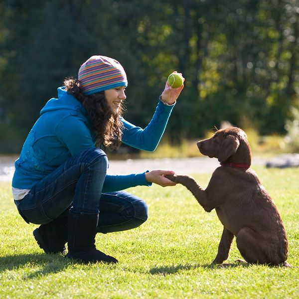
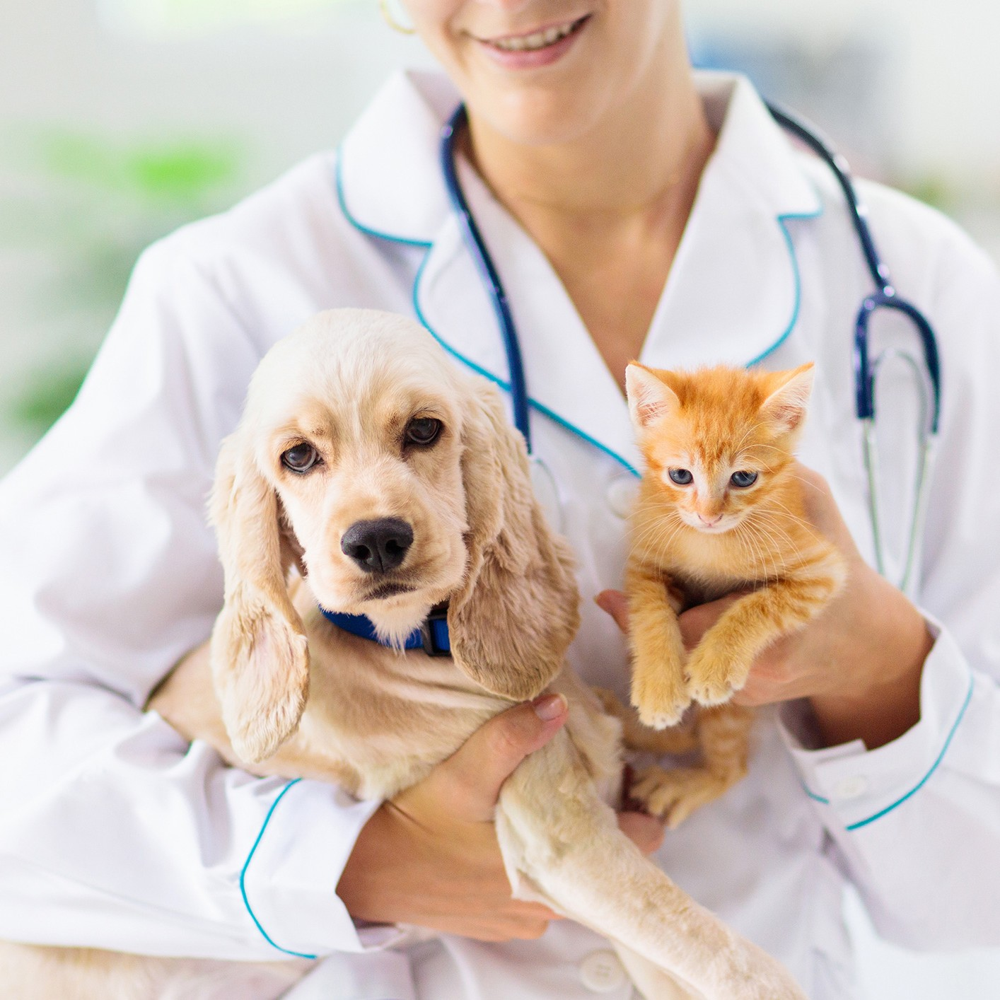
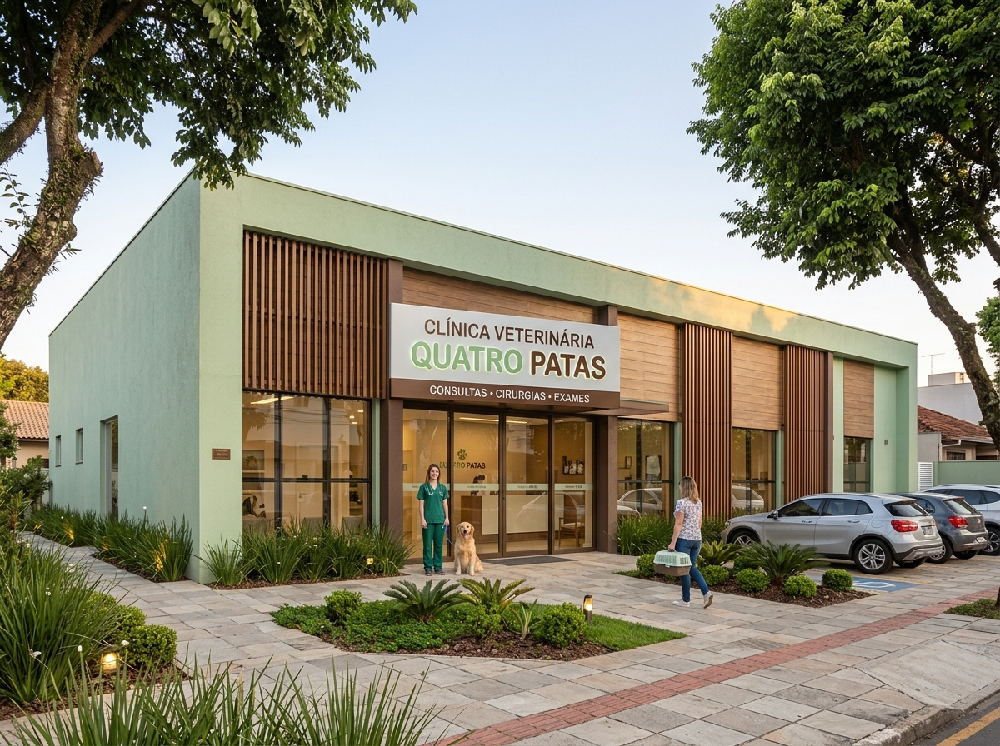
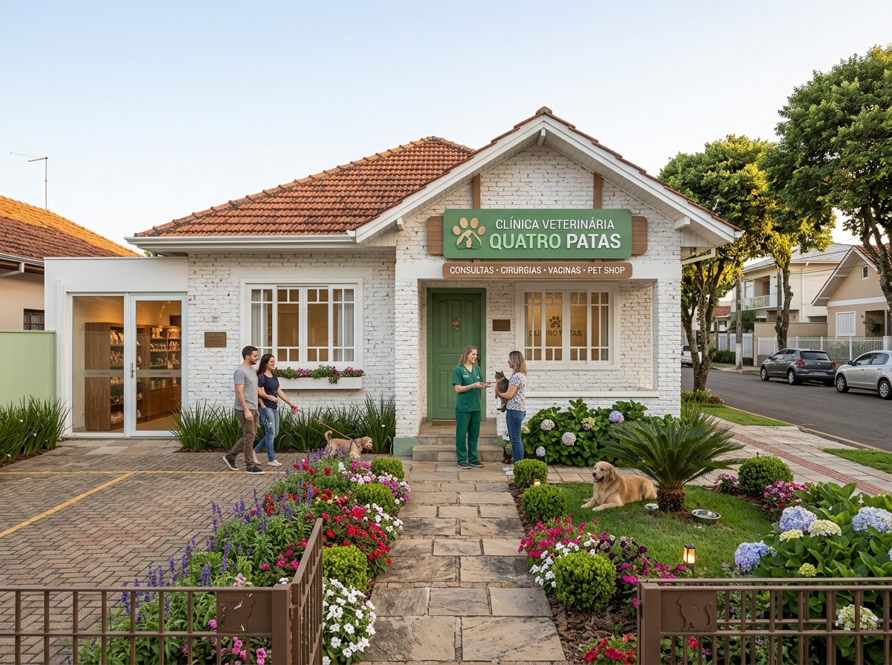
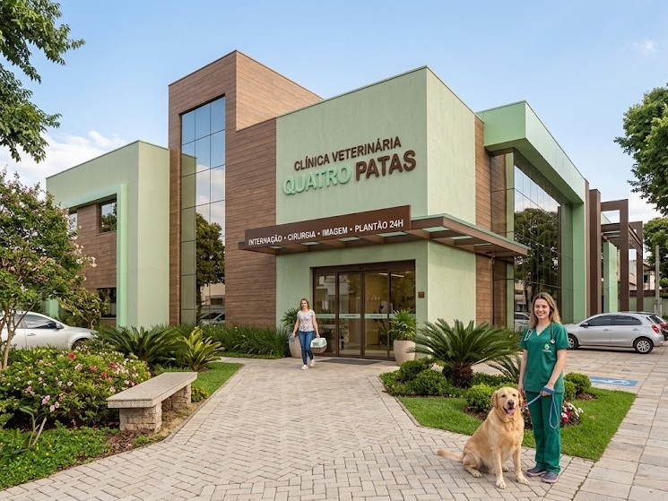

Na Quatro Patas, seu melhor amigo recebe todo o carinho e atenção que merece. Oferecemos cuidados veterinários pensados para promover mais saúde, bem-estar e qualidade em todas as fases da vida. 🐾
Agendar Consulta
Agendar Exame
Somos 4,8 ⭐ no Google!
Veja o que nossos clientes dizem sobre a Quatro Patas.
Mariana S.★★★★★
“Atendimento maravilhoso! Minha cachorrinha foi recebida com muito carinho. Fiquei tranquila sabendo que ela estava em boas mãos.”
Tutora da Mel
Rafael M.★★★★★
“Equipe atenciosa, ambiente acolhedor e profissionais que realmente amam o que fazem. Recomendo de olhos fechados!”
Tutor do Thor
Especialidades Veterinárias
Medicina Felina
Cirurgia Veterinária
Odontologia Veterinária
Dermatologia Veterinária
Oftamologia Veterinária
Ortopedia Veterinária
Acupuntura Veterinária
Fisioterapia Veterinária
0 Anos de Experiência
0 Pets Felizes
0+ Clientes
0 Profissionais Experts
Conheça a Quatro Patas
Cuidado, Amor e Bem-Estar para o Seu Pet
Olá, nós somos a Quatro Patas! 🐾 Somos apaixonados por animais e acreditamos que cada pet merece cuidado, carinho e atenção especial. Nossa missão é oferecer um atendimento acolhedor e de qualidade, cuidando da saúde e do bem-estar dos seus melhores amigos em cada etapa da vida.
Contamos com profissionais dedicados e uma estrutura preparada para proporcionar conforto, segurança e tranquilidade tanto para os pets quanto para seus tutores. Aqui, cada animal é tratado com todo o amor e respeito que merece, porque sabemos que eles são muito mais do que animais de estimação: são parte da família!
check_small Atendimento Personalizado
check_small Cuidado e Carinho em Cada Consulta
check_small Emergências 24h
Por que Nos Escolher ?
Estamos sempre em busca do melhor para nossos clientes e seus pets, com atendimento humanizado e serviços de excelência.
Experiência dos Veterinários
90%
Qualidade do Serviço
90%
Satisfação do Seu Pet!
90%
Testemunhos de Nossos Pacientes
Félix
Esse é o Félix, um gatinho muito corajoso! Ele foi adotado e tem uma família linda agora. Preocupados com o bem estar dele, os tutores o levaram no Quatro Patas Tatuapé para fazer uma consulta filhote, em que recebeu todas as orientações necessárias para cuidar do novo filhotinho. 💚 Félix já foi castrado e agora está se recuperando com todo o amor em casa, seguindo todas as orientações da Dra. Ana Elisa, veterinária dele.
Austin
O Austin é esse lindo Greyhound! ⭐
No réveillon ele veio até o Quatro Patas Tatuapé todo machucado, depois de achar que ia ser legal brincar com um porco espinho. Ficou internado durante dias na UTI, passou por várias cirurgias para retirada de espinhos (inclusive de dentro dos pulmões e de perto do coração) e teve que ficar com dreno torácico por mais de 3 meses. Durante esse tempo, ele recebeu cuidados de todos os Veterinários da nossa equipe, virou o xodó de todos e foi acompanhado de perto pela Dra. Kelly e pelo Dr. André.
A boa notícia é que conseguimos tirar o último dreno torácico e demos alta para o Austin! Agora as próximas visitas serão para vacinação, check-up’s regulares e cuidar da saúde oral. Na última foto, ele já aparece sem os drenos e sem a roupa cirúrgica, depois de quase 5 meses.
Luna
Oi eu sou a Luna, uma SRD de 1 ano e meio, e vim ao Quatro Patas Santo Amaro pois estava vomitando e com diarreia e aí a mamãe me trouxe rapidamente para consulta e exames. Fiz o Perfil Pet Care Laboratorial 1 que são vários exames, com um valor menor do que se fizer separado, e que trazem um diagnóstico mais preciso e fiz o exame de fezes também. O resultado dos exames apontou giárdia, agora já fiz o tratamento e estou linda e saudável explorando tudo por aí!
Simba
Oi, pessoal! Eu sou o Simba, um gatinho SRD de 1 ano, curioso e cheio de personalidade! 🐱 ⭐ Minha família me levou ao Quatro Patas para realizar minha castração e receber todas as orientações sobre os cuidados antes e depois do procedimento. A equipe foi muito atenciosa comigo e explicou para a minha humana como cuidar de mim durante a recuperação, incluindo o repouso e a administração dos medicamentos prescritos. Nos primeiros dias, recebi muitos carinhos e fiquei bem quietinho, mas logo estava de volta às minhas brincadeiras e sonecas favoritas. Agora estou recuperado e pronto para continuar explorando cada cantinho da casa!
Bob
Eu sou o Bob, um Shih-tzu de 4 anos, e vim ao Quatro Patas porque estava me coçando bastante e minha pele estava ficando vermelhinha. Minha família ficou preocupada e resolveu marcar uma consulta para descobrir o que estava acontecendo. A veterinária examinou minha pele, conversou com meus tutores sobre minha rotina e indicou os cuidados necessários para o meu caso. Com o tratamento recomendado e muito carinho em casa, fui melhorando aos pouquinhos! Agora estou muito mais confortável, curtindo meus passeios e aproveitando cada momento ao lado da minha família.
Mel
Oi, eu sou a Mel, uma Golden Retriever de 8 meses! 🐶 A mamãe me trouxe ao Quatro Patas porque estava na hora de atualizar minhas vacinas e garantir que eu continuasse crescendo forte e saudável. Durante a consulta, a veterinária também explicou todos os cuidados importantes dessa fase, desde a alimentação até a prevenção contra parasitas. Ganhei muito carinho durante o atendimento e saí de lá pronta para continuar minhas aventuras com segurança. Agora é só alegria, brincadeiras e muitos lambeijos!
Últimas Postagens

Adestramento de Cães: Tudo o Que Você Precisa Saber para Educar Seu Melhor Amigo
Educar um cão vai muito além de ensinar comandos como sentar, deitar e dar a pata. O adestramento é uma parte importante da convivência entre tutores e animais, pois ajuda a estabelecer limites, desenvolver a confiança e tornar o dia a dia mais tranquilo e seguro para todos. Com paciência, consistência e técnicas adequadas, é possível ensinar bons comportamentos e fortalecer o vínculo com seu melhor amigo.
18 set
Alimentação Natural para Pets: Benefícios, Cuidados e Como Oferecer uma Dieta Equilibrada
A alimentação tem um papel fundamental na saúde, na disposição e na qualidade de vida dos nossos animais de estimação. Com tantas opções disponíveis e diferentes informações circulando pela internet, é natural que surjam dúvidas sobre qual alimento oferecer, quais ingredientes são seguros e como identificar a dieta mais adequada para cada pet. Afinal, cuidar da nutrição também é uma forma de demonstrar carinho e proporcionar uma vida mais saudável ao seu companheiro.
09 out

Saúde dos Pets: Como Cuidar do Seu Cão ou Gato e Garantir Mais Qualidade de Vida
Manter a saúde do seu pet em dia é uma das demonstrações mais importantes de amor e responsabilidade. Assim como nós, cães e gatos precisam de cuidados regulares, alimentação equilibrada, acompanhamento veterinário e atenção aos pequenos sinais que o corpo apresenta. Muitas vezes, mudanças discretas no comportamento, no apetite ou na disposição podem indicar que algo não está bem, por isso conhecer as necessidades do seu companheiro faz toda a diferença.
12 dez
Nossas Unidades

Tatuapé
R. Apucarana, 950 - Tatuapé, São Paulo - SP, 03311-001
(11) 9165-4000
(11) 6541-2500

Moema
Av. Macuco, 521 - Moema, São Paulo - SP, 04523-001
(11) 5051-2244
(11) 2033-3906

Santo Amaro
R. Verbo Divino, 1100 - Chácara Santo Antônio, São Paulo - SP, 04719-002
(11) 2295-8877
(11) 5181-4321
Perguntas Frequentes
A Quatro Patas funciona 24 horas?
Sim! A Quatro Patas oferece atendimento veterinário 24 horas, todos os dias, para cuidar do seu melhor amigo sempre que ele precisar. Estamos preparados para receber seu pet em situações de emergência e oferecer o cuidado e a atenção que ele merece, inclusive durante a noite, aos finais de semana e feriados.
A clínica aceita convênios veterinários?
Sim! A Quatro Patas aceita alguns convênios veterinários para facilitar o acesso aos nossos serviços. Como a cobertura pode variar de acordo com o plano contratado e o procedimento necessário, recomendamos entrar em contato com nossa equipe para confirmar se o seu convênio é aceito e quais atendimentos estão disponíveis.
Preciso agendar uma consulta para levar meu pet?
Para consultas de rotina, recomendamos verificar a disponibilidade e realizar o agendamento antecipadamente. Em casos de emergência, você pode procurar a Quatro Patas a qualquer momento, pois nosso atendimento funciona 24 horas. Se possível, entre em contato com a equipe antes de vir para receber orientações.
Quais animais são atendidos pela Quatro Patas?
Nosso objetivo é proporcionar cuidado, conforto e bem-estar aos animais de estimação. Atendemos cães e gatos, oferecendo atenção individualizada para compreender as necessidades de cada paciente. Entre em contato para confirmar a disponibilidade de atendimento para outras espécies.
O que devo fazer se meu pet apresentar uma emergência?
Se o seu pet apresentar sinais como dificuldade para respirar, convulsões, sangramento intenso, desmaio ou suspeita de intoxicação, procure atendimento veterinário imediatamente. A Quatro Patas funciona 24 horas para receber seu companheiro quando ele mais precisa. Sempre que possível, ligue para a clínica durante o deslocamento para que a equipe possa orientar sua chegada.
Quais serviços veterinários a Quatro Patas oferece?
A Quatro Patas busca cuidar da saúde e da qualidade de vida do seu pet em diferentes etapas da vida. Nossa estrutura e nossos serviços podem incluir consultas veterinárias, avaliações preventivas e atendimento de urgência e emergência, conforme a disponibilidade da unidade. Entre em contato para conhecer os serviços oferecidos e verificar quais procedimentos estão disponíveis.
Como posso entrar em contato com a Quatro Patas?
Nossa equipe está pronta para ajudar você a encontrar as melhores orientações para o cuidado do seu pet. Entre em contato pelos nossos canais de atendimento para esclarecer dúvidas sobre consultas, convênios, serviços disponíveis e emergências. Afinal, sabemos que seu companheiro faz parte da família e merece atenção, carinho e cuidado em todos os momentos.